A practical guide to enterprise storage & resilience engineering
Storage decisions are easy to defer and painfully expensive to fix later. I’ll walk through the Linux, operational, and cloud storage primitives I use when designing systems that survive both predictable growth and catastrophic failure. Each section has a concrete scenario and an illustration so you can map theory to the trenches.
SRE monitoring checklist: what to watch for
Storage monitoring should focus on symptoms, not components. Track user-visible signals, leading indicators, and the low-level device signals that help diagnose root cause.
- User-facing SLIs: successful request rate, request latency percentiles (p50/p95/p99) for operations that depend on storage (reads/writes). These drive SLOs and alerts.
- Latency and error percentiles: monitor p95/p99 latency separately for reads and writes; alert on sustained deviations vs baseline.
- Throughput and IOPS: separate read vs write IOPS and bytes/s; track per-volume and per-LV rates so noisy jobs are visible.
- Queue depth and device stalls: rising queue depth is an early warning of saturation; investigate before latency increases.
- Free space and growth rate: alert on free space percentage and on burn rate (delta bytes/day). Use projection to trigger procurement or cleanup earlier than hard thresholds.
-
SMART/kernel errors: track SMART failures, media
errors, and
dmesgI/O errors — these predict hardware failure and should surface to paging alerts. - Snapshot and backup health: failed snapshots or backups, long rehydrate times, and growing backup queues are critical SRE signals.
- Noisy neighbor detection: correlate per-process I/O (via exporters or host-level tools) with device metrics to rapidly identify background jobs to reschedule.
- Capacity headroom: keep a rolling safety margin that accounts for snapshot retention and replication overhead.
- Alert quality: prefer symptom-based alerts (high user latency, error rate) combined with tooling alerts (device errors, SMART) to avoid alert fatigue.
- Runbooks & automation: every pageable alert should link to a concise runbook with clear next steps and rollback instructions. Automate low-risk remediation when safe.
Example Prometheus alerts
# p99 write latency above 200ms for 5m
expr: histogram_quantile(0.99, sum(rate(node_disk_io_time_seconds_bucket{job="node"}[5m])) by (le, device)) > 0.2
# low free space on a filesystem for 10m
expr: (node_filesystem_avail_bytes{mountpoint="/data"} / node_filesystem_size_bytes{mountpoint="/data"}) < 0.15
Use alerting as a conversation starter between SRE and platform teams: alerts should be actionable and include context (recent changes, top consumers, and suggested mitigations).
Storage choices become tomorrow’s DR headache
Decisions you make today—filesystem layout, how you measure capacity, snapshot cadence, or whether applications write directly to block storage—drive how recoverable and affordable your service is. I treat storage design as risk engineering: what failure modes exist, how much data can we lose, and how long will it take to restore service?
Linux storage fundamentals: LVM, filesystems, multipath, RAID
Linux gives you many layers: physical media → RAID/multipath → LVM → filesystem. Knowing when to use each is practical, not ideological.
- Practical rule: use LVM when you expect to resize volumes, but don’t use LVM to paper over unreliable hardware.
- Filesystems: XFS for large filesystems and sustained high I/O, ext4 for general-purpose, and avoid frequent metadata-heavy workloads on XFS without tuning.
- Multipath: mandatory on hosts with SAN/NVMe-oF to avoid IO path single points of failure. Test path failover under load.
Example: a database host with two controllers and four paths — we
use RAID1 on arrays, enable multipathd with
failback=immediate=false, create LVM PVs and LV per DB,
then format with XFS with noatime, logbsize tuned. That
layout lets us snapshot LVs without stopping the DB briefly.

Monitoring disk I/O and utilization
You cannot protect what you don’t measure. Track IOPS, latency (p50/p95/p99), queue depth, throughput, and percent utilization (both device and filesystem). Correlate with active workloads to separate noisy neighbors.
Tools & metrics: iostat, sar,
blktrace, pidstat, atop, and
Prometheus exporters. Alert on p99 latency over baseline and
sustained device utilization >70% for more than 10 minutes.
Scenario: After a traffic spike, p99 write latency jumps and device utilization hits 95%. Because we track queue depth and per-LV IOPS, we identify a backup job that overlapped with a compaction job—reschedule backups to low-traffic windows.
Capacity planning (forecasting, thresholds, right‑sizing)
Capacity planning is trend math plus a policy. Build three forecasts: conservative (95th percentile growth), expected (median), and optimistic (min). Convert storage growth into operational thresholds: warning (70–80%), action (85–90%), and emergency (95%+).
Concrete approach: use rolling windows (daily snapshots of used bytes) and fit a simple exponential smoothing or linear regression to project 3, 6, 12 months. Define headroom for snapshots and replication: if your snapshot retention requires 1.5× active data, include it in projection.
Example: An analytics dataset grows 20% month-over-month. With 30 days retention and daily snapshots, effective capacity needs are ~30× daily change plus base; plan procurement cycles to buy 40% extra usable capacity to avoid emergency migrations.
Disaster Recovery (RTO/RPO, backups, testing)
RTO and RPO must come from business requirements, not infrastructure comfort. Map recovery steps to measurable times and data windows.
- RPO = how much data you can lose. RPO = 0 requires synchronous replication to a remote site—costly.
- RTO = how quickly you must restore service. This dictates automation level: scripted recovery vs manual.
- Backup strategies: snapshot-based (fast), object-based (S3, durable), archive (cold storage).
- Failover testing: run realistic restore drills to uncover missing secrets and ordering assumptions.
Scenario: We assumed EBS snapshots alone were sufficient for DR. During a region outage, restoring thousands of volumes from snapshots sequentially would have taken days. We reduced RTO by maintaining a smaller Hot-Standby AMI set (pre-warmed) and automated parallel attach/boot steps—snapshots remained our cold-tier.
Common DR mistakes: not testing restores, relying solely on snapshots, and ignoring application-level ordering.
Business continuity vs Disaster Recovery
BC is broader than DR: it includes operations, people, processes, and runbooks. A DR plan that restores machines but leaves teams without communication, credentials, or supplier access is not BC-ready.
- Runbooks: concise, tested, and assume zero institutional memory.
- "Zero data loss" implies synchronous replication or WAL shipping and should be scoped to critical streams only.
Cloud storage on AWS: EBS vs EFS vs S3
Make the decision by access pattern, durability, and cost: EBS for block I/O, EFS for POSIX shared access, S3 for immutable objects and backups. Use lifecycle policies and cross-region replication for DR.
Example: hot logs on EFS for real-time processing, archive to S3 with lifecycle (30d → IA → Glacier), and nightly EBS snapshots for DB backups with a 7-day fast-restore pool.
How these pillars connect
Capacity planning informs snapshot retention and RTO planning. Filesystem and LVM choices affect how straightforward restores are. Monitoring drives when to run DR playbooks and when to provision new capacity.
Practical Linux admin: partitions, mounting, and troubleshooting
Commands I reach for during storage work and incidents.
Adding a disk and extending a volume
sudo lsblk -f
sudo parted /dev/nvme1n1 --script mklabel gpt mkpart primary 0% 100%
sudo pvcreate /dev/nvme1n1p1
sudo vgextend vg_data /dev/nvme1n1p1
sudo lvextend -L +200G /dev/vg_data/lv_data
sudo xfs_growfs /mnt/data
Mounting and /etc/fstab
Prefer mounting by UUID; example fstab entry:
UUID=xxxxxxxx-xxxx-xxxx-xxxx-xxxxxxxxxxxx /data xfs defaults,noatime 0 2
Snapshots & quick restores
sudo lvcreate -s -L 5G -n snap-20260811 /dev/vg_data/lv_data
sudo mkdir -p /mnt/snap && sudo mount /dev/vg_data/snap-20260811 /mnt/snap -o ro
Triage & troubleshooting
-
lsblk -f,blkid,df -h dmesg | tail— kernel I/O errorssmartctl -a /dev/sdX— SMART healthiotop,iostat -x 1 10-
multipath -ll,mdadm --detail /dev/md0
Recovery playbook: full disk failure (annotated)
-
Detect & isolate: confirm with
dmesgandsmartctl. - Failover or unmount: fail traffic to replica or remount read-only.
- Replace media: partition and provision replacement disk.
- Reintroduce: add to VG/RAID and restore from snapshot/replica.
- Validate: mount read-only and run app checks.
- Post-incident: update runbooks and alerts.
Final practical checklist
- Measure first: collect p99 latency, utilization, snapshot overhead.
- Model capacity including snapshot and replication overhead.
- Define RTO/RPO from business needs and map to technology.
- Automate restores and test them regularly.
- Use lifecycle policies to balance cost and durability.